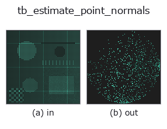

typed op• Data kinds: points → points
• Call: fullseye.apply(img, "tb_estimate_point_normals", a=0.5, b=0.5) (the 2-D model is one image plus two scalar knobs a,b∈[0,1])

*The figure is the actual output on a synthetic 128×128 input. Left: input, right: output. Point clouds are drawn as a top-down scatter (brightness = z), 1-D series as a line plot, volumes as the maximum-intensity projection along z, videos as the middle frame, complex images as magnitude; return values that are not pictures are shown as the values themselves.*
Sweeping knob a (0.1 / 0.5 / 0.9, the other knob at its default):
▸ tb_estimate_point_normals: knob a sweep (docs site)
*Knob b does not change the output (measured: identical at 0.1 / 0.5 / 0.9).*
Stages (the ops that come before → this op, left to right):
▸ tb_estimate_point_normals: stages (docs site)
On other images (synthetic scene / photo / coins. Top row: inputs, bottom row: their outputs. Knobs at default):
▸ tb_estimate_point_normals: other inputs (docs site)
Point cloud (N,3) → unit normals (the smallest eigenvector of the local k-nearest-neighbor covariance = PCA).
Generates the normals needed by FPFH/SHOT/point-to-plane ICP from a raw point cloud. There are 2 orientation conventions:
viewpoint=None (default) = outward from the centroid (for all-around point clouds of closed objects) / viewpoint given = toward the viewpoint (sensor) (Hoppe 1992 / PCL convention. For a single-viewpoint scan the visible surface physically faces the sensor. Same convention as pointcloud.estimate_normals). The old version (up to 2026-08-30) used the sign "away from the viewpoint" even with a viewpoint given, so in its intended use, single-viewpoint scans, every point was flipped. Returns normals (N,3).
Procedure: cKDTree takes the k nearest neighbours of each point (including itself; truncated to N if k > N), and the eigenvector of the smallest eigenvalue of their covariance becomes the normal. Returns (N,3) float64 unit vectors. viewpoint is a 3-dimensional coordinate (sensor position). If the neighbour count min(k, N) is below 3 (1 or 2 points, or k < 3), ValueError -- with fewer than 3 points no plane is defined (with 1 point not even a covariance can be formed; until 2026-10-07 it crashed with an internal einsum error). If the neighbours are collinear, the normal is returned undetermined (not checked). Small k is sensitive to noise; large k rounds off corners.
Downstream: dst_normals of icp_point2plane, normals for render_shaded, normals_to_egi. Same convention as pointcloud.estimate_normals (ledger estimate_normals).
The 3d op estimate_point_normals bridged into the 2-D evolution registry. The implementation is the same; only the calling convention is adapted to op(v, a, b). a sweeps k (default 16). b is unused.
• Sample-data catalog (download URLs / licences) — 2-D uses skimage.data (BSD/public domain) plus synthetic images; 3-D lists download URLs for real data sources (Stanford, PDS, …).
• Operator provenance and references — the sources of the research/methods this op family came from.
The program below has been verified to run (same input as the figure). In Studio's help this block becomes buttons that load and run it on the spot.
img_to_points 0.50 0.50 tb_estimate_point_normals 0.50 0.50
▸ Load this pipeline · Load & run
The examples below call the underlying ledger op estimate_point_normals. This bridge op is the same implementation adapted to the fn(v, a, b) convention, so the behaviour carries over unchanged (only the call form differs).
• fpfh_correspondence — py -3.11 examples_3d/fpfh_correspondence.py
points as input)identity · tb_points_to_voxel · tb_iss_keypoints · tb_project_points · tb_render_point_depth · tb_statistical_outlier_removal · tb_radius_outlier_removal · tb_voxel_grid_downsample
typed)tb_points_to_voxel · tb_iss_keypoints · tb_project_points · tb_render_point_depth · tb_statistical_outlier_removal · tb_radius_outlier_removal · tb_voxel_grid_downsample · tb_mls_smooth
*Provenance: ops.py — 2D operator registry. This per-op note is generated by tools/opdocs.py md (do not hand-edit).*
© 2026 Kazufumi Furuse — Fullseye operator documentation. Licensed under Apache-2.0.